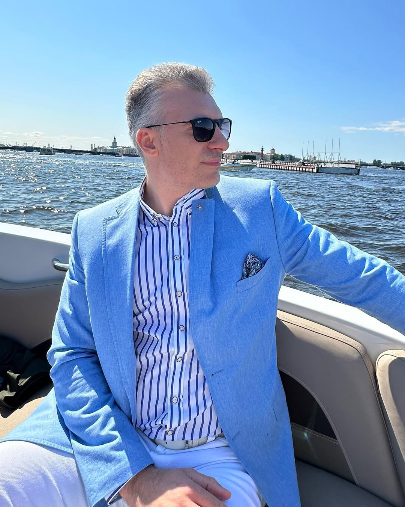

Изображение слева, текст справа

Личная информация
- Имя: Павел Сабиров
- Дата рождения: 17.09.1977
- Email: newpash73@gmail.com
- Телефон: +7 999 114 3579
- Адрес: Москва, Россия
О себе
- Я родился в небольшом поселке Вороновка, в республике Татарстан, недалеко от Казани. Мое детство прошло в сельской местности, где мой отец занимался сельским хозяйством, и я с детства помогал ему в этом деле. Когда я пошел в школу, жизнь изменилась: ежедневно приходилось ездить на автобусе 30 минут, а если его пропускал, то приходилось идти пешком 3,5 часа. Пропускать занятия не разрешалось — родители строго следили за учебой.
- С 1985 по 1996 год я учился в школе, а затем поступил в Самарский государственный университет (СамГУ) на факультет экономики и управления. Там, с 1996 по 2000 год, я изучал различные аспекты финансов. Полученное образование помогло мне хорошо разобраться в этой сфере, и моя дальнейшая жизнь всегда была связана с финансами. После окончания университета я начал карьеру в строительной компании, работая в отделе продаж, что стало моим первым шагом в финансовой сфере.
Образование
- 1996–2000: Самарский государственный университет, Финансы и управление
Опыт работы
- 2001–2005: Руководитель отдела продаж в ООО "Грань"
- 2005–2012: Генеральный директор сети магазинов ООО "Монетка"
- 2014–н.в.: Исследователь блокчейн-технологий и инвестор
Навыки
- 1.Финансовый анализ
- 2.Управление проектами
- 3.Инвестирование в блокчейн и недвижимость
- 4.Лидерство и командная работа
Хобби и интересы
- *Футбол
- *Чтение книг
- *Катание на лыжах
- *Бег и участие в марафонах